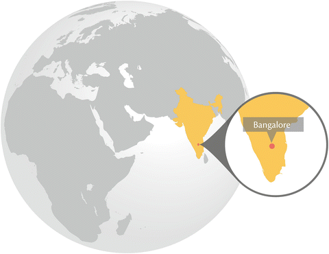
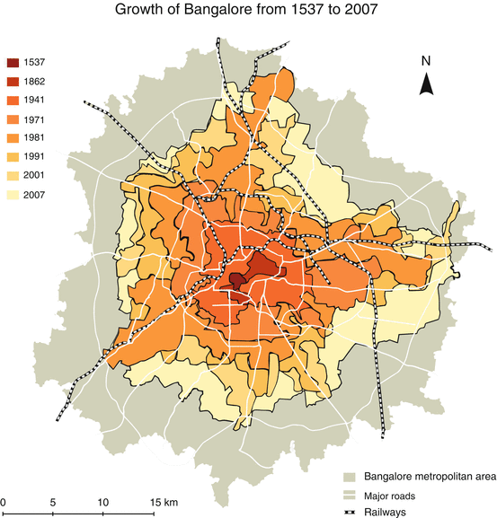
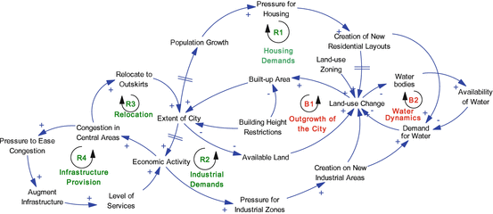

Key Findings
- Bangalore is simultaneously sprawling and growing rapidly in population
- The official governance structure is heavily compartmentalized and fragmented
- The lakes and green spaces in the city are rapidly transforming or disappearing
- Civic initiatives play an important role in providing protection for the urban ecosystems
- The city’s poor often play a direct role in maintaining the biodiversity, while also being the most vulnerable to environmental hazards.
7.1 Introduction
Bangalore is the principal administrative, cultural, commercial, industrial, and knowledge capital of the state of Karnataka. The city is geographically located at 12.95° N latitude and 77.57° E longitude and situated on the Deccan plateau, at an altitude of 920 m above msl. Bangalore is a fast growing incipient megapolis, with an increase in population from 163,091 during 1901 to 8,499,399 as per the 2011 Census (Census of India 2011). With the advantages of booming economic activity, availability of land for expansion, and the city’s year-round favorable climate due to its location at a higher elevation; population growth, migration and expansion has been extensive, leading to urban sprawl and landscape fragmentation in and around Bangalore (Sudhira et al. 2007; Nagendra et al. 2012).
Bangalore was known as a tiny village in the twelfth century and has grown through the intervening centuries, to emerge as the fifth largest city in India today. Popular belief associates this with an agricultural ecosystem service, considering the name “Bengaluru” (the city’s name in the local language Kannada, from which “Bangalore” has been anglicised) to be derived from “benda kaalu ooru” – town of boiled beans. Tradition associates the twelfth century Hoysala King Vira Ballala with the origin of this name. The tale states that Vira Ballala once lost his way during a hunting expedition in this region and reached the hut of an old woman, who offered him cooked beans that were locally grown. In memory of her hospitality, the king is believed to have named the place as ‘benda kaala ooru’ (town of boiled beans) (Rice 1897a). While this is an interesting story, it is unlikely to be true as there are references to the name seen much prior to the supposed date of this incident, in a nineth century war memorial stone inscription (Annaswamy 2003; Sudhira et al. 2007). Kamath (1990) offers an alternative explanation also linked to the local ecology, stating that Bangalore is said to have got its name from benga, the local Kannada language term for Pterocarpus marsupium, a species of dry and moist deciduous tree, and ooru, meaning town. Thus, the ecological character of the surrounding landscape appears to be closely linked with the very name of the city.
The founding of modern Bangalore is attributed to Kempe Gowda, a scion of the Yelahanka line of chiefs, in 1537 (Kamath 1990). Kempe Gowda is also credited with construction of four towers along four directions from the Petta, the central part of the city, to demarcate the boundaries of anticipated growth. The city has substantially surpassed these boundaries envisaged in the sixteenth century, with particularly rapid growth in the past half century. Since 1949, Bangalore has grown spatially more than ten times (see Fig. 7.1) (Sudhira et al. 2007).

Fig. 7.1
Spatial growth of Bangalore from 1537 (red) to 2007 (light yellow) (Source data from Census of India. Prepared by H.S. Sudhira and modified by Jerker Lokrantz/Azote. Published with kind permission of ©H.S. Sudhira 2013. All Rights Reserved)
Bangalore’s prominence as a center of trade and commerce was established during the early nineteenth century, when the city supported a flourishing trade and commerce (Buchanan 1870). In the past two decades, Bangalore’s economic growth, due to information and communication technology (ICT) industrial expansion, has placed the city on the global map (Friedman 2005). Bangalore’s economic growth is powered by the presence of numerous higher education institutions, public sector companies and knowledge based industries (Glaeser 2011).
Despite the popular perception of the economic dominance of the ICT-based industries, the city’s economy is highly diversified, being also characterised by textile, automobile, machine tool, aviation, space, defence, and biotechnology based industries, as well as numerous services, trade and banking activities. An important feature of the economic activities of Bangalore is the huge concentration of small and medium enterprises (SMEs) in diversified sectors across the city, with more than 20 industrial estates/areas comprising large, medium and small enterprises (Sudhira et al. 2007). The city is a source of wealth for many, with a net district income of Rs. 2,625,920 lakhs (approx. US$ 5.8 billion) and a per capita income of Rs. 39,420, little more than twice of the state’s average per capita income of Rs. 18,360 (Government of Karnataka 2005). Yet, economic inequities remain strong with prevailing housing poverty for an estimated 25 % of the city’s population.
7.2 Urbanization, Ecosystem Services and Biodiversity; Scenarios and Trends
The economic growth in the city has had a major impact on ecosystems and biodiversity. Bangalore attracts a high traffic of migrants each year, and many of them indicate that they come to the city in part for its cool climate and greenery (Nair 2005; Sudhira et al. 2007). Yet ironically, while the city was once known for its wide tree-lined avenues, historic parks, and expansive water bodies, this influx of growth has led to the encroachment and pollution of water bodies, the felling of thousands of trees, and large scale conversion of open areas and parks into commercial, industrial and residential settlements (Nair 2005; Sudhira et al. 2007; Nagendra and Gopal 2010, 2011). This is not a new phenomenon, and urban expansion has led to the disappearance of some patches of the city’s iconic oldest botanical gardens even as far back as the early nineteenth century (Iyer et al. 2012), but the scale of impact has exploded in recent decades.
Further, urban growth in Bangalore – in common with many other Indian cities – is much less directed by state policies or colonial legacies than for many other parts of the world. This has resulted in patterns of growth that are irregular and complex, with reduced urbanization in the city core, but accelerated and fragmented processes of change at the periphery (Schneider and Woodcock 2008; Taubenböck et al. 2009). High land prices and scarcity of land in the city centre have led to the location of most new development at the city periphery (Sudhira et al. 2003; Shaw and Satish 2006). Consequently, patterns of change in green areas appear to be similarly constrained, with increased loss in vegetation and fragmentation in the city periphery compared to the city core (Nagendra et al. 2012). Urban expansion has also greatly transformed the land-use patterns and institutional forms of governance of many ecosystems located in former agricultural hinterland areas (Nair 2005; D’Souza and Nagendra 2011). The consequences of these combined changes in ecosystems, land use and governance have been manifold, with deterioration of biodiversity and soil quality, aggravation of urban heat island effects, increased pollution, flooding, water scarcity and epidemics, and consequent impacts on human health and well-being.
Bangalore contains a diversity of green spaces located within multiple land use categories including in parks, home gardens, office complexes, wooded streets, wetlands, and remnant forests (Sudha and Ravindranath 2000; Nagendra and Gopal 2010, 2011). Vegetation in the city core tends to harbour greater heterogeneity and species richness as well as a larger proportion of exotic species compared to rural and forested areas (Issar 1994; Neginhal 2006). Within the central, older parts of the city, few patches of remnant natural vegetation exist, and most ecosystems have been significantly modified by human influence, responding to social preferences that vary across location and time (Sudha and Ravindranath 2000). For instance, older wooded streets and parks tend to be dominated by large-canopied, slow growing long lived tree species that provide greater shade, biodiversity support, pollution reduction and microclimatic buffering while recent planting has focused more on ornamental species and short statured, small canopied, relatively short lived species that are easier to maintain but less likely to provide the same range of environmental and ecological services (Nagendra and Gopal 2010, 2011). Bangalore has a relatively high tree diversity but relatively low tree density compared to many other cities (Nagendra and Gopal 2010). As with other parts of the world, home gardens in Bangalore are rich in plant diversity but in contrast to cities in Europe and the USA, these tend to contain a large proportion of plants selected for their cultural, medicinal and culinary properties (Jaganmohan et al. 2012). The city flora contains a large proportion of exotic species, with three out of four park trees coming from introduced species (Nagendra and Gopal 2011). Many of these species have however been planted for well over a century, with the view to creating a spectacular, scenic urban landscape with a succession of species flowering across all seasons. Many of the introduced species thus support a wide diversity of birds, insects and other fauna (Issar 1994; Neginhal 2006).
Trees in Bangalore provide a diversity of ecosystem services, decreasing ambient air temperatures in the summer by 3–5 °C, and road asphalt surface temperatures by as much as 23 °C, substantially reducing levels of noxious air pollutants including SO2 and Suspended Particulate Matter (unpublished data), providing critical habitat for a diversity of birds, insects and other urban wildlife, and constituting important sources of recreational and sacred cultural services to city residents, especially in poor neighborhoods such as slums (Gopal 2011). Thankfully, despite the extensive clearing and fragmentation of vegetation in many parts of Bangalore, the city core still supports substantial vegetation. Given the city’s colonial history as a former British military establishment, many of Bangalore’s large green spaces are managed by a variety of public institutions including the military and defence establishments, public sector industries, and educational institutions (Nagendra et al. 2012). Bangalore also hosts two large, historic botanical gardens, a number of educational institutions and a number of historic cemeteries (Nair 2005). These locations harbour large numbers of majestic, visually spectacular trees that provide important biodiversity and environmental/ecosystem services to the city and have provided significant protection against vegetation clearing and fragmentation in recent years (Nagendra et al. 2012). A faunal checklist compiled in 1999 documented the presence of 40 species of mammals, over 340 species of birds, 38 species of reptiles, 16 species of amphibians, 41 species of fishes and 160 species of butterflies within a 40 km radius from the Bangalore city centre (Karthikeyan 1999). Pockets of native vegetation cover persisting in academic institution campuses and botanical gardens contribute significantly to faunal biodiversity. There is high insect diversity, with reports of rare species in the campuses of Bangalore University, the Indian Institute of Science and University of Agricultural Science in Bangalore, as well as in the city’s two botanical gardens – Lal Bagh and Cubbon Park (Gadagkar et al. 1997; Kumar et al. 1997; Nayaka et al. 2003; Varghese 2006; Swamy et al. 2008). There has even been a report of the discovery of a new ant species in an Indian educational institution campus (Varghese 2006).
A number of small neighbourhood parks have also come up in the core of Bangalore in the last two decades. Their size and focus on exotic, landscaped features does appear to provide limitations in terms of the range ecological services they can provide (Nagendra and Gopal 2011).Yet, even these parks provide important recreational services for local neighbourhoods, and field surveys indicate that these constitute important habitats for migratory birds and other local biodiversity (Swamy and Devy 2010). In these and other human-impacted urban habitats in Bangalore, some taxa such as ants and earthworms are able to persist because of the availability of specialized microhabitats, leaf litter and soil organic matter (Kale and Krishnamoorthy 1981; Swamy et al. 2008), while other taxa such as lichens indicate patterns of species turnover and replacement by species more tolerant to pollution (Nayaka et al. 2003). Yet, worryingly, fragmentation of vegetation connectivity has increased over time, within the city core as well as the periphery (Nagendra et al. 2012). This is especially critical for the Bangalore urban landscape, where many migratory birds and other species need to move between a number of small, scattered habitats of variable resource quality, making their survival and persistence especially challenging.
Although satellite remote sensing indicates the presence of recent greening in some peripheral areas, field research indicates that much of this can be traced to the short term plantation of water hungry, fast growing exotic timber species such as Acacia auriculiformis and Eucalyptus on formerly agricultural lands, which are eventually converted to urban development (Nagendra et al. 2012). Fortunately, some peripheral parts have witnessed citizen-government interactions efforts at plantation and restoration of urban environments, and are beginning to provide a positive example for other peripheral areas in the city (Nagendra 2010).
The expansion and intensification of Bangalore has also transformed the land-use patterns and institutional forms of governance of the city’s wetlands and water bodies. There were once thousands of reservoirs in the area surrounding Bangalore, used for a number of purposes including agriculture, fishing, cattle washing, drinking, and domestic uses (Buchanan 1870). These water bodies were largely created and maintained by human effort, through damming rainfed streams to create networks of freshwater reservoirs topographically distributed throughout the region (Rice 1897a, b). These wetlands supported an impressive diversity of birds, fish, amphibians, reptiles, insects, and micro-organisms until quite recently (Krishna et al. 1996). Originally managed by adjacent village communities, lakes in Bangalore are now managed by a large number of government departments with overlapping jurisdictions and responsibilities (Gowda and Sridhara 2007; D’Souza and Nagendra 2011). Public perceptions and uses of lakes have also transformed as a consequence of urbanization, from community spaces valued for water and cultural services, to urban recreational spaces used largely by joggers and walkers (Srinivas 2004; D’Souza and Nagendra 2011).
Currently, over 200 lakes are located within greater Bangalore (BBMP 2010), while a much larger network of lakes surround the city at its periphery (Fig. 7.2). Rapid changes in land use have taken place around lake and wetland areas (D’Souza and Nagendra 2011) as water bodies have been encroached upon for conversion to urban land use, subjected to drying because of disruptions in the drainage networks, and polluted by domestic and industrial waste (ESG 2009).

Fig. 7.2
Distribution of lakes within and surrounding Bangalore. Note the lack of lakes in the city center, indicating their encroachment and conversion to other land uses (Prepared by and published with kind permission of © Harini Nagendra 2012. All Rights Reserved)
7.3 Governance and Institutions
An important aspect of a city is how well it plans, manages and administers, activities which form the core part of an urban agenda – governance. Yet, environment hardly becomes a priority in most instances. In Bangalore, there has been an overall emphasis on economic development at the cost of environmental degradation. Appropriate state mechanisms through institutions, policies and programs can enable the protection and maintenance of ecosystems. However, apart from the formal administrative structures, the presence and involvement of civil society significantly shapes the environmental agenda in Bangalore. The city, in the recent past, has witnessed non-governmental organizations (NGOs) and community based organisations (CBOs) taking an active and vibrant role in respect of environmental issues (Sudhira et al. 2007; Khandekar 2008).
A multiplicity of laws and institutions are known to have had control over provisioning of different ecosystem services including protection of lakes. Subramanian (1985) notes that even about a century ago, there were multiple agencies including the Government of Mysore (Public Works Department, Dewan), Government of India (Engineering Department, Secretary of State), Resident at Bangalore, Municipalities of the City and the Civil and Military station, and the Military Department, who were all involved in the water supply system, resulting in considerable delays in decision-making. The situation prevailing is no different today, with the involvement of the Bruhath Bangalore Mahanagara Palike (BBMP), Bangalore Development Authority (BDA), Bangalore Water Supply and Sewerage Board (BWS&SB), Lake Development Authority (LDA), Karnataka State Pollution Control Board (KSPCB), Department of Major and Minor Irrigation, Fisheries Department, Karnataka State Council for Science and Technology (KSCST), Agenda for Bangalore Infrastructure Development (ABIDe), Ministry of Environment and Forests, Government of India (MoEF), and Department of Science and Technology (DST), Government of India, all playing considerable roles in the various facets of ecosystem services in Bangalore (Table 7.1). However, the 74th Constitutional Amendment Act by the federal government mandates only the urban local body for protecting the environment. With a prevailing political vacuum and the clear state-capture of the urban local body, the City Corporation appears to be in no position to re-assert its position in managing environmental issues (Sudhira 2008).
Table 7.1
Institutions and their functional areas concerning the environment in Bangalore
Sl. No. | Institutions | Functional areas |
|---|---|---|
1 | Bruhat Bangalore Mahanagara Palike (BBMP) | Urban local body responsible for overall delivery of services – Development and Maintenance of Parks and Playgrounds (all open spaces), Solid Waste Management, Health, Storm Water Drains, Manages only 4 lakes currently, Responsible for Tree Cover as well |
2 | Bangalore Development Authority (BDA) | Land use zoning, planning and regulation within Bangalore Metropolitan Area; Develops and Maintains few Parks; Notification of Green Belts and Valley Zones implicates amount of development |
3 | Bangalore Water Supply and Sewerage Board (BWSSB) | Drinking water – pumping and distribution, sewerage collection, water and waste water treatment and disposal |
4 | Lake Development Authority (LDA) | Regeneration and conservation of lakes in Bangalore urban district |
5 | Department of Forests, Ecology and Environment | Formulation of programmes in the state on activities causing impact on ecology and environment, Responsible for setting up LDA |
6 | Bangalore Urban Division, Karnataka Forest Dept. | Has the key role in maintaining the green cover in and around the city, task of planting trees and increasing tree cover |
7 | Karnataka State Pollution Control Board- KSPCB | Responsible for enforcing various acts and rules concerning the Environment, monitors for air pollution, water pollution, solid waste (municipal, bio-medical and hazardous) disposal, and noise pollution. Also responsible for conducting public hearing in accordance with the EIA notification for any major projects that can potentially have environmental impacts |
Formally, among the abovementioned institutions, the environment agenda is seen as primary only by the Karnataka State Pollution Control Board (KSPCB) and the Lake Development Authority (LDA). The KSPCB was initially set up under the provisions of the Water (Prevention and Control of Pollution) Act passed in 1974, and it has been extending the responsibility for enacting the Air (Prevention and Control of Pollution) Act, 1981 and Environment (Protection) Act, 1986. Thus, today, KSPCB is responsible for enforcing various acts and rules concerning the Environment. In the context of Bangalore, KSPCB monitors air pollution, water pollution, solid waste (municipal, bio-medical and hazardous) disposal, and noise pollution. KSPCB is also responsible for conducting public hearings in accordance with the Environmental Impact Assessment notification for any major projects that can potentially have environmental impacts. Since the jurisdiction of KSPCB extends throughout the state its focus and attention on environmental issues within the city of Bangalore is not commensurate to the importance of the problems and issues.
In a move to establish formal institutional structures towards the management of lakes and water bodies, and taking cognizance of the N. Lakshmana Rau Committee (1987), the Government of Karnataka set up the Lake Development Authority (LDA), as a registered society under the provisions of the law (Karnataka Co-operative Societies Registration Act, 1959), after the Government Order No. FEE 12 ENG 2002, Bangalore, dated 10th July 2002, as a non-profit organisation working solely for the regeneration and conservation of lakes in and around Bangalore city. LDA initially developed 5,00,000 in Bangalore using funding from the National Lake Conservation Program and later extended its jurisdiction to all major water bodies in Bangalore.
Recent attempts by LDA in a few lakes to explore public-private partnerships have also been extremely controversial, leading to uncontrolled disruptive activities such as motorized boating in some lakes, which have been effectively challenged by litigations by local individuals, civic activist groups and non-governmental organizations (Khandekar 2008). These litigations, including a series of long term efforts by the Environment Support Group, have been extremely successful in garnering support from the Karnataka High Court. In a series of extremely progressive rulings, the Court has intervened on a number of aspects relating to conservation and protection of lakes (High Court of Karnataka 2011). Coupled with recent efforts by the city government to fence, protect and rejuvenate many of the city’s urban water bodies, with significant funding earmarked for these initiatives, these series of actions are beginning to reshape Bangalore’s polluted wetland and lake environment and ecology. Despite expensive government restoration projects, many lakes continue to be degraded, encroached, silted, and contaminated by sewage. In contrast, a number of government efforts at lake restoration conducted in collaboration with local communities have resulted in the significant recovery of formerly polluted lakes, increase in ground water tables, and increase in native faunal and floral biodiversity (Nagendra 2010). Although some of these community efforts have been rightly critiqued for their exclusion of specific socio-economic and livelihood groups (Sundaresan 2011), others hold significant potential for the development of similar restoration efforts in other parts of the city.
7.4 Urban Dynamics and Future Development
Bangalore’s growth in the last few decades is particularly compelling as the city has, over two centuries, been continuously adapting from being a centre of trade during the early nineteenth century (Buchanan 1870) to a Network City (Heitzman 2004). While the city continues to evolve spatially, socially, economically and culturally at a rapid pace; for the ecological systems, these are too fast to adapt in such short time spans. The consequences are glaring: the change in land-use with loss of water bodies and green cover are evident. Clearly, the trend is not encouraging.
Transportation is another major factor impacting environmental sustainability in Bangalore, which has a vehicle population of about 3.8 million for a population of 8.5 million (Regional Transport Authority 2012) – a vehicle-to-person ratio that is far higher than other Indian cities. Much of this can be explained by the lack of sufficient public transport. CO2 emissions from the road transport sector in Bangalore have been estimated at 24 million tonnes for the year 2005–2006, with emissions from other greenhouse gases, CH4 and N2O, estimated at 325 and 19 tonnes respectively. The study suggests that the total emissions projected for 2012 and 2017 would be 3.03 and 4.06 MT of CO2 equivalents respectively (Greenhouse Gas Inventory of Karnataka 2007). In recent years, there have been efforts to address this by improving the public bus service system, and building a Metro. Bangalore is also embracing non-motorized transport, through a number of community-led cycling initiatives, and efforts by the government such as the ongoing implementation of a 45 km network of bicycle friendly streets within a residential neighbourhood, and support to a recently launched campus-based bicycle sharing system in an educational campus. These efforts show promise as alternatives to encourage Bangalore’s citizens to use non-motorized modes of transport for shorter trips, and to reduce the city’s environmental and ecological footprint.
The dynamics influencing land-use change resulting in urban sprawl and loss of water bodies and vegetation can be explained by adapting a causal loop diagram initially developed to explain the drivers of urban sprawl in Bangalore (Sudhira 2008). In Bangalore, master planning is the primary instrument that determines the land-use policy. Specifically, in the course of master planning exercise, one of the prominent measures to limit growth is by way of enforcing building height restrictions formalised through the floor area ratio (FAR) and corresponding zoning regulations tied to different land-use categories.
The analysis on land-use change resulting in urban sprawl suggests water dynamics is a crucial balancing feedback that can limit the outgrowth. In the prevailing scenario for Bangalore, wherein water is primarily sourced about 100 km away over a gradient of about 100 m for about 1,000 MLD (million litres per day), there is also huge energy costs involved in pumping this to different parts of the city. The piped water supply does not meet the demand for water, and many parts of the city depend on ground water extracted from borewells and supplied through private tankers, and over extraction of ground water, coupled with the shrinking of waterbodies and conversion of many open areas to impervious urban surfaces have led to alarming levels of depletion in the ground water table. This has a particularly severe impact on poor settlements, whose inhabitants are unable to afford the high costs of privatized water supply. With significant land-use changes in the recent past resulting in loss of water bodies, primarily, prevalence of water bodies and availability of water is going to be a crucial factor for the growth of the city. Accordingly, the key variables identified were: population growth, economic activity, pressure for new housing and industrial areas, land-use zoning, available land, availability of water, built-up area, water bodies, level of services and building height restrictions. The corresponding causal loop diagram is shown in Fig. 7.3.

Fig. 7.3
Causal loop diagram for urban sprawl and resulting water dynamics (Prepared by and published with kind permission of © H.S. Sudhira 2013. All Rights Reserved)
The six feedbacks generated in this system were:
(i)
Reinforcing feedbacks:
(a)
Housing demands (R1)
(b)
Industrial demands (R2)
(c)
Relocation (R3) and
(d)
Infrastructure provision (R4)
(ii)
Balancing feedback:
(a)
Outgrowth of the city (B1)
(b)
Water dynamics (B2)
The reinforcing feedbacks, R1 and R2, quite naturally for most cities, set the demand for development of land into residential layouts/apartments or industrial estates, respectively. As the city grows, there is congestion in central areas forcing residents to relocate in the outskirts. This is captured by the reinforcing feedback, R3. The other reinforcing feedback, R4, for infrastructure provision suggests that augmenting infrastructure in a congested area can be counter-productive. Indeed this insight is well established by the classic Braess paradox (Braess 1968). This was demonstrated by adding a link within the network to ease congestion, which would be counter-intuitive in a congested road network. Reinforcing feedbacks often generate exponential growth and then collapse. Systems that are self-regulating or self-correcting have been provided with balancing loops. The balancing feedback, B1, results in the outgrowth of the city through the process of land-use change limited by the availability of land for development. The other balancing feedback, B2, rise in demand for water and land-use change affects water bodies and will be limited by availability of water. The other control variable as envisaged by the land-use planning is land-use zoning and building height restrictions, which suggests that it influences the extent of outgrowth and built-up areas negatively.
Bertaud and Brueckner (2005) have shown that in unrestrictive building height conditions, the extent of the city spread is contained with higher densities in central areas. Further, the BangaloreSim model (Sudhira 2008) that was primarily developed as a spatial planning support system was used to generate scenarios for 2025. The model was used to generate forecasts of land cover for 2025 with higher FAR and siting of growth poles at key economic activity centres. The simulations revealed an increase of built-up areas (417 km2) amounting to 31.55 % of the land cover and the water bodies declined to less than 3 km2 with about 2.26 % of the land cover. The simulations also suggest a trend towards an increase in high-density built-up and decrease in low-density built-up areas. The increase in built-up areas with high densities suggests more congestion in certain parts of the city. While this exercise was useful in generating a scenario of urban land-use, there can be many more scenarios generated by undertaking the simulations for different policy settings to understand their respective consequences. However, as noted earlier, the reduction of water bodies is of particular concern.
With the current trends of urban growth Bangalore is experiencing, the forecast for 2025 gives pointers on possible implications despite several limitations in the model, including limited policy levers for testing. However, on the one hand, the increase in built-up areas and reduction of water bodies seem like a matter of concern, on the other hand the increase of high density and decrease of low density built-up (or sprawl) can be of some consolation.
7.5 Concluding Remarks
Further research is critically needed to understand how the larger climatic and ecological context influences urban ecosystems and ecosystem services in Bangalore (D’Souza 2011). In the context of increasing global warming, while the Indian monsoon has remained relatively stable, an increasing frequency of extreme rain events has been noted, ranging from floods to droughts (Goswami et al. 2006). The fragmentation of green spaces and of lake connectivity, coupled with extreme rainfall events, is likely to result in an increase in the frequency of droughts as well as flooding in urban areas. Vulnerable socio-economic settlements, in particular slums, are likely to be especially affected by this double whammy of urbanization and climate change (D’Souza 2011). Women and children in slums in particular have to deal with the consequences of lack of access to clean water, lack of sanitation, and consequences in the form of increased susceptibility to infectious diseases in Bangalore. Adaptation measures, particularly those of ecosystem restoration and rejuvenation, can help to mitigate some of these impacts, but unfortunately these have been largely ignored by planners so far (Sudhira 2008). Recent studies have indicated that greenery and plants play an extremely significant role in the lives of slum residents in Bangalore, providing critical social, cultural, religious medicinal and food related ecosystem services (Gopal 2011). Thus, city planning needs to take into account the needs of vulnerable socio-economic populations, which are especially susceptible to the short term and long term impacts of urbanization including loss of green spaces, microclimatic variations, air and water pollution, flooding, lack of sanitation and epidemics (D’Souza 2011; Gopal 2011). Unfortunately, such approaches are currently missing in Bangalore and community action has largely been successful in engaging with city planners and administration only in wealthier localities, sometimes resulting in the further exacerbation of existing inequities and vulnerability (Ranganathan 2011; Sundaresan 2011).
Bangalore is known for its strong and active community networks. Thus a number of individual citizens, resident associations, civil society networks, naturalist groups, and citizen science and educational programs have also been influential in promoting awareness of, and organization around issues related to biodiversity and conservation in the city (Sudhira et al. 2007; Nagendra 2011). The environmental activist group “Hasiru Usiru” (loosely translated as “Greenery is Life”) has been very active in Bangalore since their formation in 2005, with activities ranging from green awareness to protests against tree felling and urban governance. Social networks such as Hasiru Usiru have contributed substantially to keeping issues of urban conservation in the forefront of public awareness in recent years, in addition to initiating a number of Public Interest Litigations that have resulted in influential court rulings on issues of tree felling (Sudhira et al. 2007; Enqvist 2012). The bird-watching community in Bangalore, comprising mostly of amateurs with a few experts, has been very active, meeting at least once every month for over two decades, with an active email discussion group, “bngbirds”, hosted at yahoo.com (a similar group exists on butterflies that also uses mailing lists and discussion groups to communicate and organise). Since the past 5 years, there has also been an annual Bird Race, with participants having cumulatively logged over 230 species of birds in and around Bangalore in a single day, and helping to provide systematic data that can eventually aid in long term assessment (available at http://birdrace.dhaatu.com/bangalore). Other popular citizen science initiatives that have been primarily developed and housed in Bangalore, though applied at wider geographic scales, are the ‘Migrant Watch’ program (http://www.migrantwatch.in/), and the Citizen Sparrow program, (http://citizensparrow.in/).
As urbanization poses greater challenges, compounded by effects of urban primacy on Bangalore, it remains to be seen how the city adapts and evolves in decades to come. Eventually, the sustenance of the city will depend on how effectively it retains its natural resources, particularly green spaces and water bodies. In this context, Bangalore’s cultural character as a location of significant civic and collective action will play a very important role in shaping urban environmental protection and conservation efforts, with collaborations between citizens and government agencies playing an increasingly critical role in placing pressure on, negotiating with and shaping government responses to planning for ecosystem management and conservation (Sudhira 2008; Khandekar 2008; Nagendra 2010, 2011; Ranganathan 2011; Sundaresan 2011).
Acknowledgments
The authors thank USAID for financial support through a PEER grant to Harini Nagendra.
References
Annaswamy, T. V. (2003). Bangalore to Bangalore. Bangalore: Vengadam Publications.
BBMP. (2010). Namma Bangalore Nisarga: An action plan for development of Bangalore’s lakes. Bangalore: Bruhat Bangalore Mahanagara Palike.
Bertaud, A., & Brueckner, J. K. (2005). Analyzing building-height restrictions: Predicted impacts and welfare costs. Regional Science and Urban Economics, 35, 109–125.CrossRef
Braess, D. (1968). Ãœber ein Paradoxon aus der Verkehrsplanung. Mathematical Methods of Operations Research (ZOR), 12(1), 258–268.CrossRef
Buchanan, F. (1870). A journey from Madras through the countries of Mysore, Canara, and Malabar (2nd ed., Vols. I–3). Madras: Higginbotham and Co.
Census of India. (2011). “Rural-urban distribution” in provisional population totals, paper 2 (Vol. 1, India series 1, pp. 1–19). Viewed on 21 March 2012 (http://www.censusindia.gov.in/2011-prov-results/paper2/data_files/india/paper2_1.pdf)
D’Souza, J. (2011). Vulnerability assessment of urban marginalised communities: A pilot study in Bangalore slum areas (pp. 1–54). Mumbai: Centre for Environment and Documentation and Indian Network on Ethics and Climate Change.
Enqvist, J. (2012). The role of civil society networks for governance of urban social-ecological systems in the global south. Masters thesis, Stockholm Resilience Centre, Stockholm.
ESG. (2009, September 26). Report of workshop on “Urban lakes as ecological, cultural and public spaces.” Bangalore: Environment Support Group (ESG) and Karnataka State Council for Science and Technology. http://static.esgindia.org/campaigns/lakes/action/ESG_UrbanLakesWorkshop_Report_260909.html
Friedman, T. L. (2005). The world is flat: A brief history of the twenty-first century. New York: Farrar, Straus & Giroux.
Gadagkar, R., Rastogi, N., Nair, P., Kolatkar, M., & William, H. (1997). Ant fauna of the Indian Institute of Science campus: Survey and some preliminary observations. Journal of Indian Institute of Science, 77, 133–140.
Glaeser, E. (2011). Triumph of the city: How our greatest invention makes us richer, smarter, greener, healthier, and happier. New York: Penguin Press.
Gopal, D. (2011). Flora in slums of Bangalore, India: Ecological and socio-cultural perspectives. Master of science thesis, Institute of Botany and Landscape Ecology, Ernst Moritz Arndt University of Greifswald, Greifswald.
Government of Karnataka. (2005). Karnataka at a glance – 2004–05. Bangalore: Directorate of Economics and Statistics, Government of Karnataka.
Gowda, K., & Sridhara, M. V. (2007). Conservation of tanks/lakes in the Bangalore metropolitan area. Management of Environmental Quality, 18, 137–151.CrossRef
Greenhouse Gas Inventory of Karnataka. (2007). State of environment report: Greenhouse gas inventory. State Pollution Control Board and Enzen Global Solutions Pvt. Ltd.
Heitzman, J. (2004). Network city: Planning the information society in Bangalore. New Delhi: Oxford University Press.
High Court of Karnataka. (2011). Preservation of lakes in the city of Bangalore: Report of committee constituted by the Hon’ble High Court of Karnataka to examine the ground realities and prepare an action plan for preservation of lakes in the city of Bangalore. Bangalore: High Court of Karnataka. https://docs.google.com/viewer?a=v&pid=explorer&chrome=true&srcid=0BwFiFsEFJY-7YmMwMTE5OTItNzMzNy00YjIwLWJiYjUtN2NiOGU4ODNlNmFk&hl=en_US&pli=1
Issar, T. P. (1994). Blossoms of Bangalore. Bangalore: Mytec Process Pvt. Ltd.
Iyer, M., Nagendra, H., & Rajani, M. B. (2012). Using satellite imagery and historical maps to investigate the contours of Lalbagh. Current Science, 102, 507–509.
Jaganmohan, M., Vailshery, L. S., Gopal, D., & Nagendra, H. (2012). Plant diversity and distribution in urban domestic gardens and apartments in Bangalore, India. Urban Ecosystems, 15, 911–925. doi:10.1007/s11252-012-0244-5.CrossRef
Kale, R. D., & Krishnamoorthy, R. V. (1981). What affects the abundance and diversity of earthworms in soils? Proceedings of the Indian Academy of Sciences (Animal Sciences), 90, 117–121.
Kamath, S. (1990). Places of interest, Karnataka State Gazetteer: Bangalore District, Chapter 19. Bangalore: Government of Karnataka.
Karthikeyan, S. (1999). The fauna of Bangalore – The vertebrates and butterflies of Bangalore: A checklist. Bangalore: World Wide Fund for Nature – India, Karnataka State Office.
Khandekar, S. (2008, November 5). High Court stays privatization of lakes. Citizen Matters. [online]. http://bangalore.citizenmatters.in/articles/view/577-lake-protection
Krishna, M. B., Chakrapani, B. K., Srinivasa, T. K. (1996). Water birds and wetlands of Bangalore: A report on the status, water quality, plankton and birds of the lakes in and around Bangalore and Maddur, Karnataka, India. Bangalore: Birdwatchers’ Field Club of Bangalore and Bangalore Urban Division, Karnataka State Forest Department.
Kumar, S., Shrihari, K. T., Nair, P., Varghese, T., & Gadagkar, R. (1997). Ant species richness at selected localities of Bangalore. Insect Environment, 3, 3–5.
Nagendra, H. (2010, September 19–23). Maps, lakes, and citizens. Seminar India, 613, 19–23.
Nagendra, H. (2011, July 7). Green were the citizens? Citizen Matters. http://bangalore.citizenmatters.in/articles/view/3161-chronicle-of-Bangalores-green-battles-green-were-the-citizens
Nagendra, H., & Gopal, D. (2010). Street trees in Bangalore: Density, diversity, composition and distribution. Urban Forestry and Urban Greening, 9, 129–137.CrossRef
Nagendra, H., & Gopal, D. (2011). Tree diversity, distribution, history and change in urban parks. Urban Ecosystems, 14, 211–223.CrossRef
Nagendra, H., Nagendran, S., Paul, S., & Pareeth, S. (2012). Graying, greening and fragmentation in the rapidly expanding Indian city of Bangalore. Landscape and Urban Planning, 105, 400–406.CrossRef
Nair, J. (2005). The promise of the metropolis: Bangalore’s twentieth century. New Delhi: Oxford University Press.
Nayaka, S., Upreti, D. K., Gadgil, M., & Vivek, P. (2003). Distribution pattern and heavy metal accumulation in lichens of Bangalore city with special reference to Lalbagh garden. Current Science, 84, 674–680.
Neginhal, S. J. (2006). Golden trees, greenspaces and urban forestry. Bangalore: Self Published.
Ranganathan, M. (2011). The embeddedness of cost recovery: Water reforms and associationism at Bangalore’s fringes. In C. McFarlane & J. Anjaria (Eds.), Urban navigations: Politics, space, and the city in South Asia. New Delhi/Abingdon: Routledge.
Regional Transport Authority. (2012). Vehicle strength and growth in Bangalore (year wise). http://rto.kar.nic.in/bng-veh-statcss.html. Last Accessed 31 Aug 2012.
Rice, B. L. (1897a). Mysore: A gazetteer compiled for government, revised edition: Vol. I. Mysore in general. Westminister: Archibald Constable and Company.
Rice, B. L. (1897b). Mysore: A gazetteer compiled for government, revised edition: Vol. II. Mysore, by districts. Westminister: Archibald Constable and Company.
Schneider, A., & Woodcock, C. (2008). Compact, dispersed, fragmented, extensive? A comparison of urban growth in twenty-five global cities using remotely sensed data, pattern metrics and census information. Urban Studies, 45, 659–692.CrossRef
Shaw, A., & Satish, M. K. (2006). Metropolitan restructuring in post-liberalized India: Separating the global and the local. Cities, 24, 148–163.CrossRef
Srinivas, S. (2004). Landscapes of urban memory: The sacred and the civic in India’s high-tech city. Hyderabad: Orient Longman.
Subramanian, D. K. (1985). Bangalore City’s water supply – A study and analysis. In V. Vyaulu & A. K. N. Reddy (Eds.), Essays on Bangalore (Vol. 4). Bangalore: Karnataka State Council for Science and Technology.
Sudha, P., & Ravindranath, N. H. (2000). A study of Bangalore urban forest. Landscape and Urban Planning, 47, 47–63.CrossRef
Sudhira, H. S. (2008). Studies on urban sprawl and spatial planning support system for Bangalore, India. Ph.D. thesis, Indian Institute of Science, Bangalore.
Sudhira, H. S., Ramachandra, T. V., Raj, K. S., & Jagadish, K. S. (2003). Urban growth analysis using spatial and temporal data. Journal of the Indian Society of Remote Sensing, 31, 299–311.CrossRef
Sudhira, H. S., Ramachandra, T. V., & Subrahmanya, M. H. B. (2007). City profile Bangalore. Cities, 24, 379–390.CrossRef
Sundaresan, J. (2011, December 10). Planning as commoning: Transformation of a Bangalore lake. Economic & Political Weekly, XLVI(50), 71–79.
Swamy, S., & Devy, S. (2010). Forests, heritage green spaces, and neighbourhood parks: Citizen’s attitude and perceptions towards green spaces in Bangalore. Journal of Resources, Energy, and Development, 7, 117–122.
Swamy, S., Barve, N., & Davidar, P. (2008). Response of ants to disturbance gradients in and around Bangalore, India. Tropical Ecology, 49, 235–243.
Taubenböck, H., Wegmann, M., Roth, A., Mehl, H., & Dech, S. (2009). Urbanization in India – Spatiotemporal analysis using remote sensing data. Computers, Environment and Urban Systems, 33, 179–188.CrossRef
Varghese, T. (2006). A new species of the ant genus Dilobocondyla (Hymenoptera: Formicidae) from India, with notes on its nesting behaviour. Oriental Insects, 40, 23–32.CrossRef